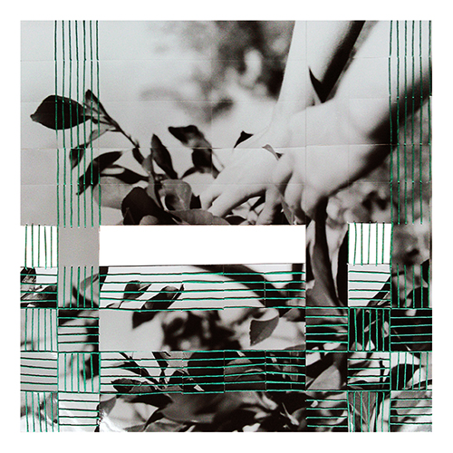
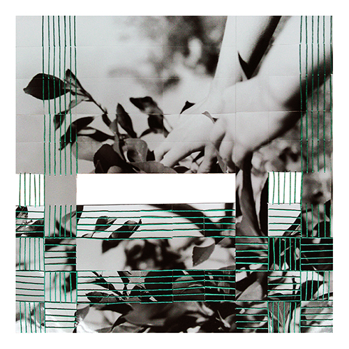
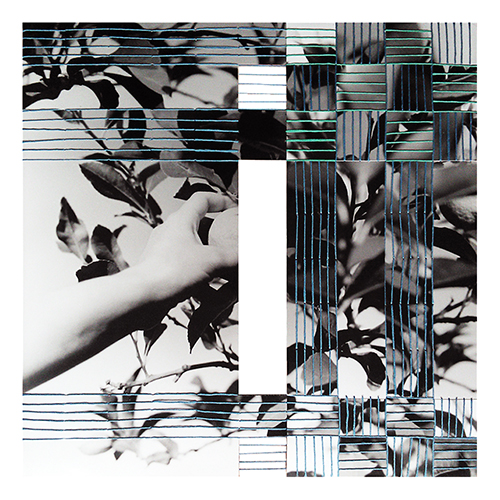
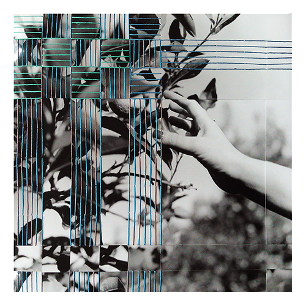
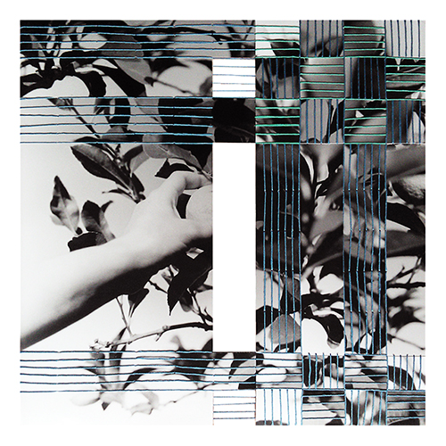
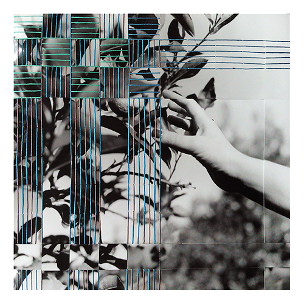
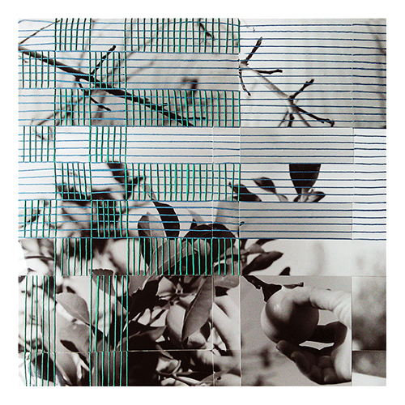
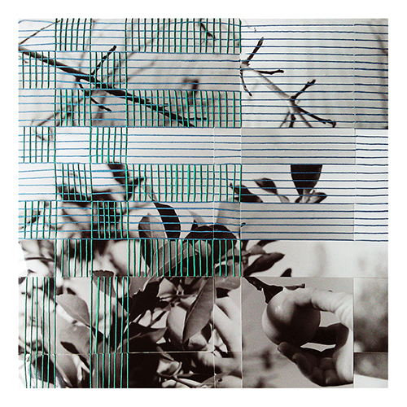
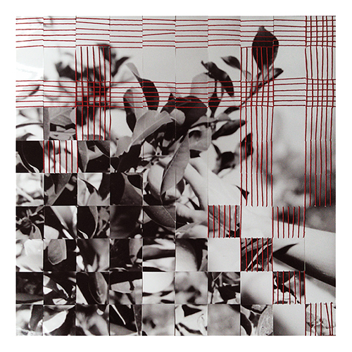
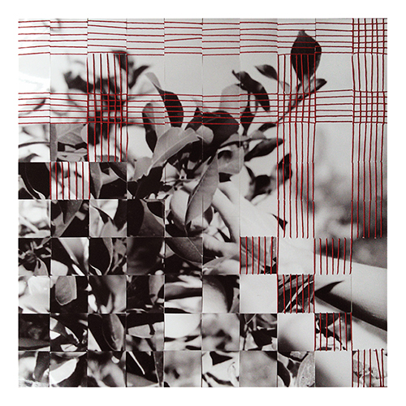

Dialogues: A Hybrid Art Project
Dialogues: A Hybrid Art Project is based on the exploration of hybrid spaces of exchange and art interventions that blend physical and virtual realities in new configurations. The project promotes notions of connectivity via art and interactions that blend private/public conceptions of space.
The first round of ‘Dialogues’ in July 2022, curated by Elisavet Kalpaxi with the valuable help of Konstantinos Panapakidis, sought to instigate a dialogue between eight artists. The participating artist exchanged artworks and installed them in their personal spaces for a period of 10 days. During that period the artworks were publicly available on this site through relevant documentation and live streaming events (Dialogues #1).
Alongside the virtual exhibition, the project involved a series of discussions between the artists to enable further interactions and reflections. Part of this, was the decision to invite more artists to form their own rounds of dialogues. We created an instructional booklet, our ‘formula’, which describes all the processes involved in making the project, and which can be found on the menu of this site. It is envisioned that some new rounds of Dialogues will be instigated in July every year, with a shared opening event. But the formula is available for appropriation according to the participants’ priorities.

Into the Garden
Woven silver prints and thread, 42.5 x 42.5 cm.
 


 



 

 

This is a series of woven images that I started working on in 2013. The idea draws on a work I completed a year earlier, the Cliff with Pine Trees triptych (see archive), which was meant to manually reproduce the polyphase effect of the black-and-white composite images that I was working on during that period. In these works instead of digitally composing the images, I am weaving strips from different images to bring different elements together. Weaving makes visible the image’s construction. It also links the image’s narrative to different traditions and forms of labour linked to mythologies of femininity.